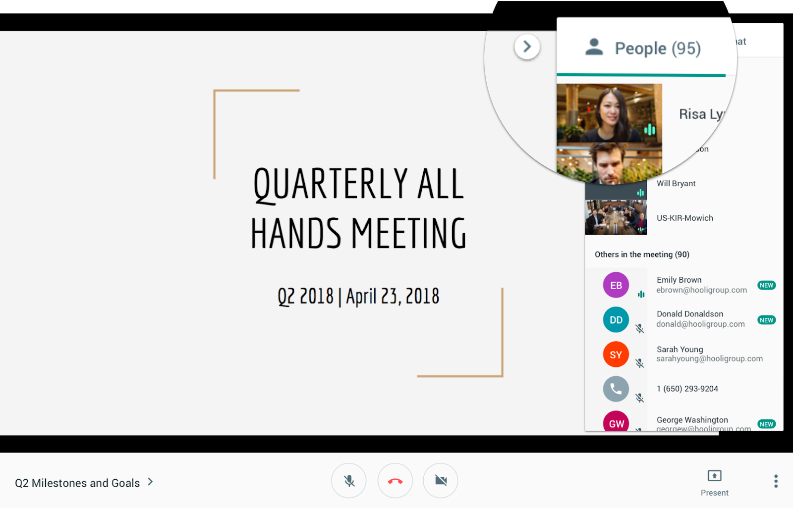
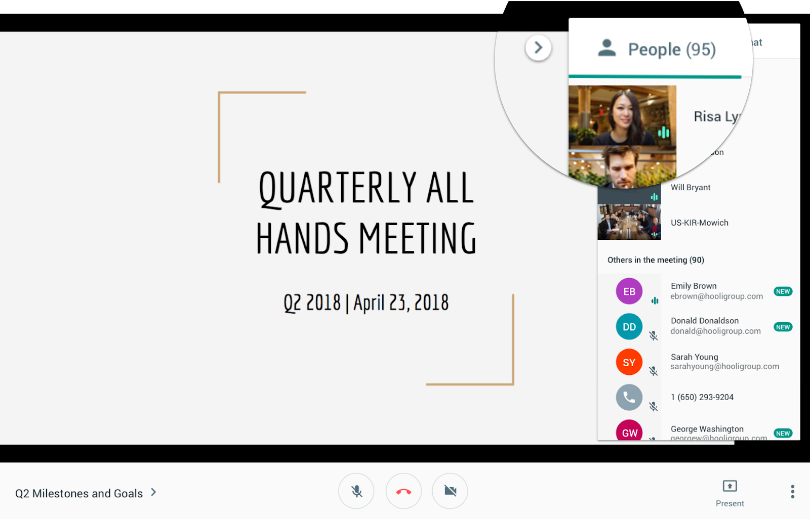

Setting 1: A large virtual lecture
A typical virtual 200 level engineering class with around 250 students. Most participants are young adults in their late 10s or early 20s, although there are some exceptions of older students.
While the professor is presenting a basic circuit schematic, a student is interrupted by her mother. She briefly leaves her desk and walks to the living room to see what’s going on. After a short while she returns and finds that the professor is now asking everyone to do an exercise. She has no idea what just happened and wants to ask her friend what she missed, so she picks up her phone and texts him. He replies after a while, but the professor is already moving on to discussing the answer.
Setting 2: Joining a talk by industry leaders with colleagues
A virtual design talk given by a senior designer at Google as part of a 2-day worldwide design conference. Most people joining are designers whose companies were given tickets.
The host is presenting a novel method of incorporating data into design decisions. An attendee thinks that it’s a great idea and wants to quickly tell his colleagues that they should try it out next time at work. Since there is no option to ‘chat privately’ in the meeting software they are using, the attendee decides to message his colleagues on Slack. His colleagues who are online on Slack quickly reply with ‘Yes!’ and ‘It’s so cool!’.
Colleagues who weren’t on Slack during the conference saw a string of messages the next morning. They don’t recall what the host was saying about the method so they have to ask around.
From our observations, it is clear that current video conferencing solutions do not aptly recreate/facilitate the adhoc/sidebar interactions that humans routinely have in classroom and meeting environments (aka whispering little thoughts or comments to peers). We believe these types of 'sidebar conversations' are an essential part of group meetings and collaborative effort.
This shortcoming of modern video-conferencing software is often worked-around by people needing to have a chat application open in parallel and directly messaging other attendees during the meeting. In physical settings, these little/adhoc chats back and forth would simply involve leaning over to your neighbour and whispering something in their ear but this is a cumbersome task in current systems.
Name: Julia
Age: 19
Occupation: U0 Computer Engineering Student
Julia is friendly and studious. She currently lives at home with her parents, her brother, and a dog. Since school went online, she has been studying mainly from her room, although she would sometimes work in the living room as well.
Although she has a fairly good relationship with her family, she still finds it a bit distracting when everyone’s working from home. Her mum and her brother would sometimes bother her in the middle of the lecture, causing her to lose focus. In a recent class, she was interrupted by her mum yelling in the living room. After returning to her seat, she found out that she has now lost track of what was happening. She texted her friend, but he didn’t reply instantly and she ended up missing this part of the lecture. When asked about her experience, she replied
“I wish there’s a way to get instant help from friends as you would in real life,”
Name: Andrew
Age: 26
Occupation: Senior Product Designer at Cool.co
Andrew describes himself as sociable and curious. He likes to attend design conferences and applies what he learned to his job. Before the pandemic, he would go to the venue with his colleagues and sit together. If he was attending alone, he would not be shy to strike up small talks with strangers around him.
Now that everything is virtual, he is finding the lack of quick and immediate exchange of feedback frustrating. In a recent conference, Andrew wanted to quickly discuss something related to the presentation with his colleagues but he couldn’t lean over and whisper as he would’ve in real life. As a workaround, he went on Slack and messaged his team there, but some of his colleagues weren’t active on Slack at that time. The next day, he got some questions on what his message was referring to. As a result, he had to spend extra time explaining to his colleagues. When asked about this problem he sadi
“I want to be able to quickly talk with my colleagues on the video call software like how I would whisper to them in real life!”
Age: 46
Occupation: Executive Project Management
Sharon has more than a million things on the go, never misses a beat and definitely doesn’t have time for your small talk. In order to manage her many parallel streams of work, Sharon is a master multi-tasker often juggling emails, incoming requests, knocking at her office door and coordinating picking up her kids after school all the while attending back to back meetings!
One of Sharon’s mechanisms for flawlessly keeping all her projects moving and on budget is to act and adapt fast. Any time clients or board members mention a deadline or need something done their words have barely left their mouth before Sharon has delegated it to her team and picks the best person for the job. In meet rooms everyone would know the subtle communications or glances she would make letting you know she needed this from you and you had better not let her down. On the many video-meetings she has had to resort to popping open a parallel messaging app to delegate in real-time like she is so famous for. Obviously typing up messages in separate apps isn’t as fluid but Sharon and her team are adapting as best they can..
“It's just so hard to operate and orchestrate my team as quickly now that everything is on video-conferencing.”
Description: User wants to join the video call
User action: 1. User turns his computer on 2. User looks for the link to the meeting 3. User clicks on the link 4. User clicks on microphone and camera settings before joining (depends on the meeting software)
Description: User wants to whisper to someone
User action: 1. User clicks on the ‘whisper’ button 2. User waits for the person to accept his request
Description: User receives a whisper from someone
User action: 1. User gets a notification of an incoming whisper 2. User chooses to accept or decline the whisper
Description: User wants to accept or block a whisper
User action: 1. User clicks on the ‘accept’ or ‘decline’ button
Description: User wants to engage in a whisper
User action: 1. User accepts / wait for someone to accept the whisper 2. User talks
while listening to the main speaker
Description: User wants to stop the whisper
User action: 1. User clicks ‘leave’ 2. User returns to the main call with 100% volume of the main speaker
https://blog.ezuce.com/aparte-video-conference
In eZuce’s Viewme, the user can select a person he wants to whisper to from the dropdown menu and he will be directed to a separate room if the person accepts the whispering request. In this separate room, users can talk freely without others in the meeting hearing them. It’s also possible to have multiple private rooms simultaneously, although the user can only be active in one room at a time.
Zoom & GoogleMeet - Private Messaging
Zoom and GoogleMeet include a feature that allows private messaging in the chat window of the main video call. Users can select who he wants to message and text the person. However, voice messages are not supported in these 2 softwares.
Sidebar
Sidebar allows users to create separate rooms in a video call. They can also join existing rooms, and invite others to join as well. However, the user cannot listen to the main speaker when he’s in a room.
https://ieeexplore.ieee.org/document/7014582
eZuce’s Viewme | Zoom & GoogleMeet | Sidebar | |
Voice whispering | Yes | No | Yes |
Text whispering | Yes | Yes | Yes |
Spatial aspect taken into account *whisper to people sitting next to you[e][f] | No | No | No |
Continue listening to the main speaker | No | Yes | No |
Block unwanted whispers | Yes | No | No |
Our proposed solution will be able to cover all of the 4 points mentioned above. With the spatial aspect included in our design, users will be able to virtually ‘sit’ next to people they know, and initiate whispers to them. The volume of the whisper and the voice of the main speaker will vary according to where they are sitting virtually. [g]With this feature, we will be able to replicate an experience similar to real life scenarios and improve the overall video conferencing quality.
We will also be able to mitigate the downfall of whispering in real life, such as losing focus and missing out on the presentation, hearing unwanted whispering around you and getting annoyingly disrupted by a talkative neighbour. With a playback function, users can choose to replay sections of the recorded presentation that they missed as they were whispering. [h][i][j][k]Whispers will be confined to involved personnel only so other users sitting next to them virtually will not be disrupted. Users will be able to block unwanted whispers as well.
This web application will be written in JavaScript (unsurprisingly) and HTML/CSS and is designed to run inside the browser. Conceptually, all users (including the presenter) will access the video-conference room by entering a unique key for their meeting. Similar to how many video-conferencing systems work by using a share link and a unique ‘meeting ID’. In the below diagram we see a standard video-conference session where arrows connecting the speaker and all listeners represent the flow of audio from the presenter to many recipients while all recipients are on mute. In our scenario however, a couple of the peers have engaged in a ‘whisper’ or sidebar conversation; these ephemeral whispers are denoted by a dashed line in the diagram between peers.
The below diagram more clearly defines the steps involved with establishing a whisper between participants. Once everyone is in the video-conference (likely most will be on mute) and the presenter has started their seminar, then someone decides to initiate a whisper with another participant in the meeting by clicking on their video/icon. This action initiates a peer-to-peer connection (facilitated by the ‘signaling server’ likely Google’s) between the two participants. Steps 1&2 represent the connection & permission information passed between peers to establish the audio/video connection denoted by 3. These audio/video ‘whisper’ connections use the exact same technologies and APIs that the standard video conferencing is using (WebRTC) but the mic input from initiator is directed directly to the receiver rather than the larger audience allowing for sidebar conversations without disrupting the entire session. On the periphery we have the application database which simply acts as a shared datasource for maintaining user & session information, meeting rooms and facilitates request passing between participants.
There are 2 main components to the technical implementation of our system. Firstly, identifying and adapting existing standard web-based video-conferencing solutions to fit our needs. There are many of these sample applications that are pre-built and open-sourced, most of which use the relatively simple WebRTC javascript API. Once we’ve familiarized and adapted this video-conferencing app, we will build on top the ‘whisper’ functionality. Establishing the actual connection between peers will be trivial by reusing the functions/capability from the sample application. Theorizing, designing and then implementing the user-experience around initiating and engaging seamlessly with whispers will be the focus of our effort.
Our group has the required skill sets and applied experience to implement this type of web-based video conferencing app by using high-level javascript APIs and existing open-source resources. 2 group members are familiar web developers and the third specializes in UX design for tech companies.
We estimate that the work will take us a total of roughly 10 weeks to implement by splitting the project into 3 phases of implementation. Firstly, we expect to spend 1-2 weeks seeking, familiarizing and adapting an open-source/sample video-conferencing app to suit our needs. Then we expect to use 3-4 weeks to build the whisper functionality & baseline user experience. Followed by another 3-4 weeks testing, iterating and finalizing the user-experience and aesthetics of the system.
[a]do we need a setting for sharon?
[b]this could be the business meeting with different team groups ... like a software company that has a developer team, a tester team and so on
[c]I'm not sure if you can still hear the main speaker while in whispering in a separate room
[d]Hmm I'm inclined to think no. So that can be our differentiator
[e]not sure if this is something we want?
[f]i think if we go with that option then we need to add another functionality as to people would select where to sit when they enter a virtual class room
[g]not sure if this is what we'll do
[h]not sure about this? we also need permission from the users to record
[i]should we limit the length of the whisper?
[j]good question, but why should we?
[k]what if theres no recording allowed and the person decided to whisper all the way through the video conference ?